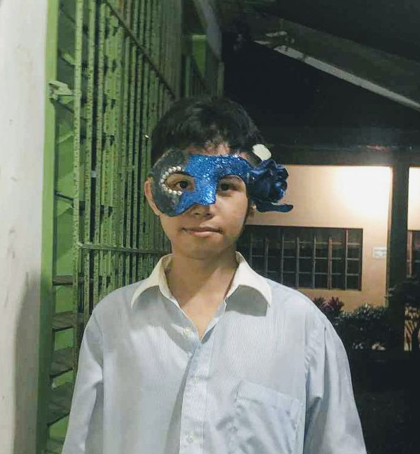

WHO AM I?

Hello! My name is Mark Jun Gianan Copino. A first-year BSCS student of Bicol University Legazpi Campus.
ABOUT ME
HOBBIES
- Cooking my favorite cuisine.
- Problem solving except mathematical problems.
- Writing an essay.
- Watching Foreign Dramas.
- Listening to music.
- Playing online games.
INTERESTS
- Human Evolution.
- Videos about how to love ourself.
- Beliefs and Traditions.
- Reading about how world created and the origin.
- Knowing how things work.
MY PATH INTO COMPUTING
When I was in Senior High School, I had a teacher who graduated in Computer Programming and taught us Computer Systems Servicing. He encouraged us to explore programming and consider Computer Science as a college degree. He also mentioned that it is an in-demand field with promising career opportunities. His words sparked my interest and influenced my decision to pursue this program.
I chose Computer Science because I believe it can help me build a better future. However, I honestly had different expectations. I thought it was all about science and technology, but I never expected it to involve so much mathematics and problem-solving. As someone who struggles with math, I sometimes question my decision and regret choosing this program.
Nevertheless, I am already here, and giving up is not the answer. I just need to trust myself, embrace the challenges, and believe that I can succeed.
MY FAVORITES
| Social Media | Heroes | Movies | Actors |
|---|---|---|---|
| Scarlet Witch | Avenger | Bea Alonzo | |
| TikTok | Spiderman | Train to Busan | Park Bo-gum |
| Superman | Feng Shui | Cha Eun-woo |
FUTURE GOALS
- Learn programming and other valuable technical skills.
- Establish a successful business or technology company.
- Earn a degree in Computer Science or a related field.
- Invest in properties and other profitable ventures.
- Become an influential and respected businessperson.
- Create employment opportunities for others.
REFLECTION
While doing this activity, I encountered many challenges. As someone who uses a cellphone to create a website, I found it difficult to type the codes, correct my mistakes, and copy and paste certain elements. This is because working on a computer is different from working on a cellphone. On a computer, we use a cursor to point at things and a mouse to click, whereas on a cellphone, we rely on our fingers to navigate and select items.
I also experienced moments when I forgot some special codes. However, creating this website has become easier compared to my first experience because I already have a layout to guide me. Unfortunately, I made a mistake that left me blaming myself. Do you want to know what happened? I forgot to save the HTML file and CSS styles of my first website! As a result, I had to redo everything from the beginning. This made me feel disappointed and somewhat discouraged. Nevertheless, this experience taught me the importance of saving my work and being more careful throughout the process.